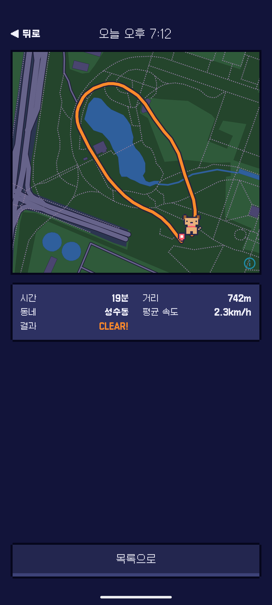
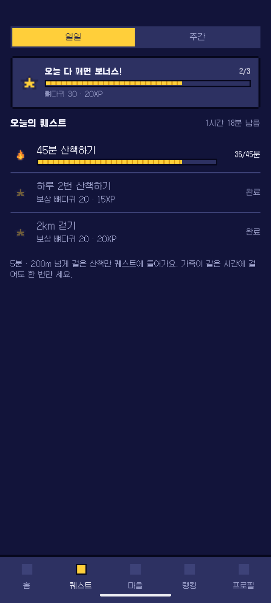
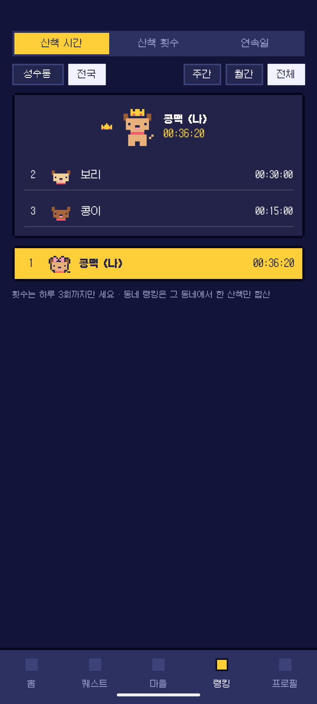
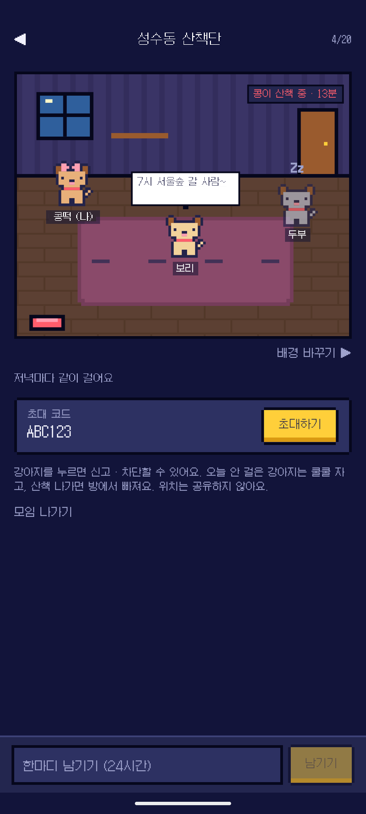
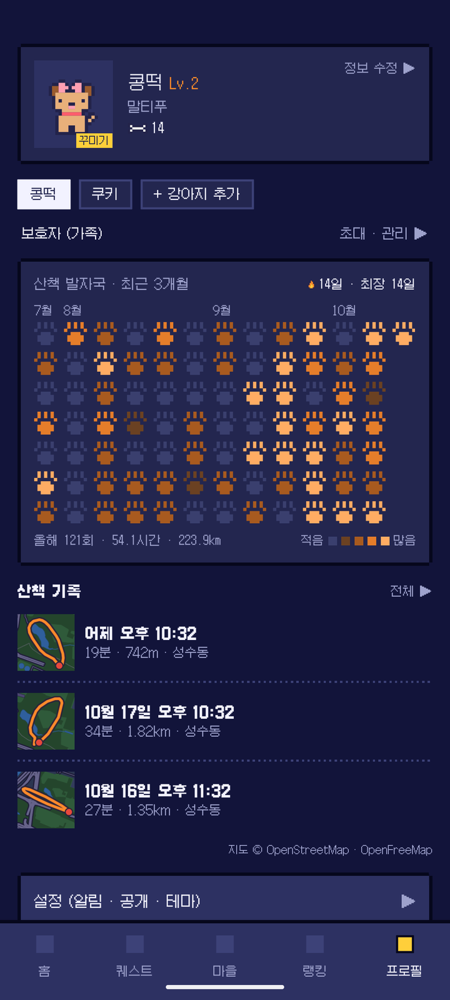

귀 · 눈 · 입 · 머리털 · 무늬 · 꼬리 · 크기 · 색을 골라 조립해요. 견종을 누르면 어울리는 모습이 먼저 채워지고, 거기서 우리 애처럼 고치면 돼요. 앱에서도 똑같이 만들 수 있어요.
산책 출발 버튼 하나면 끝. 화면을 꺼도 걸은 길과 시간이 기록되고, 돌아오면 오늘의 결과가 기다리고 있어요.

GPS 흔들림을 걸러 내고 실제로 걸은 길만 매끈한 선으로 그려요. 시간 · 거리 · 평균 속도 · 동네까지 한 번에.

"45분 산책하기", "하루 2번 산책하기", "2km 걷기"… 다 깨면 보너스까지. 산책할 이유가 매일 생겨요.

산책 시간 · 횟수 · 연속일로 동네와 전국 순위를 겨뤄요. 1위는 왕관을 써요.

초대 코드로 들어오는 우리끼리 방. 누가 산책 중인지, 오늘 안 걸은 친구는 쿨쿨 자고 있는지 한눈에 보여요.

산책한 날마다 발자국이 하나씩 진해져요. 최근 3개월을 한 화면에, 꾸미기 상점에서 산 모자와 목도리도 여기서.
산책 앱이라 위치를 다루지만, 다른 사람에게 집 근처가 드러나지 않도록 처음부터 이렇게 만들었어요.
무료로 받아서 우리 강아지를 등록하고 도트 친구를 만들면, 바로 첫 산책을 시작할 수 있어요.